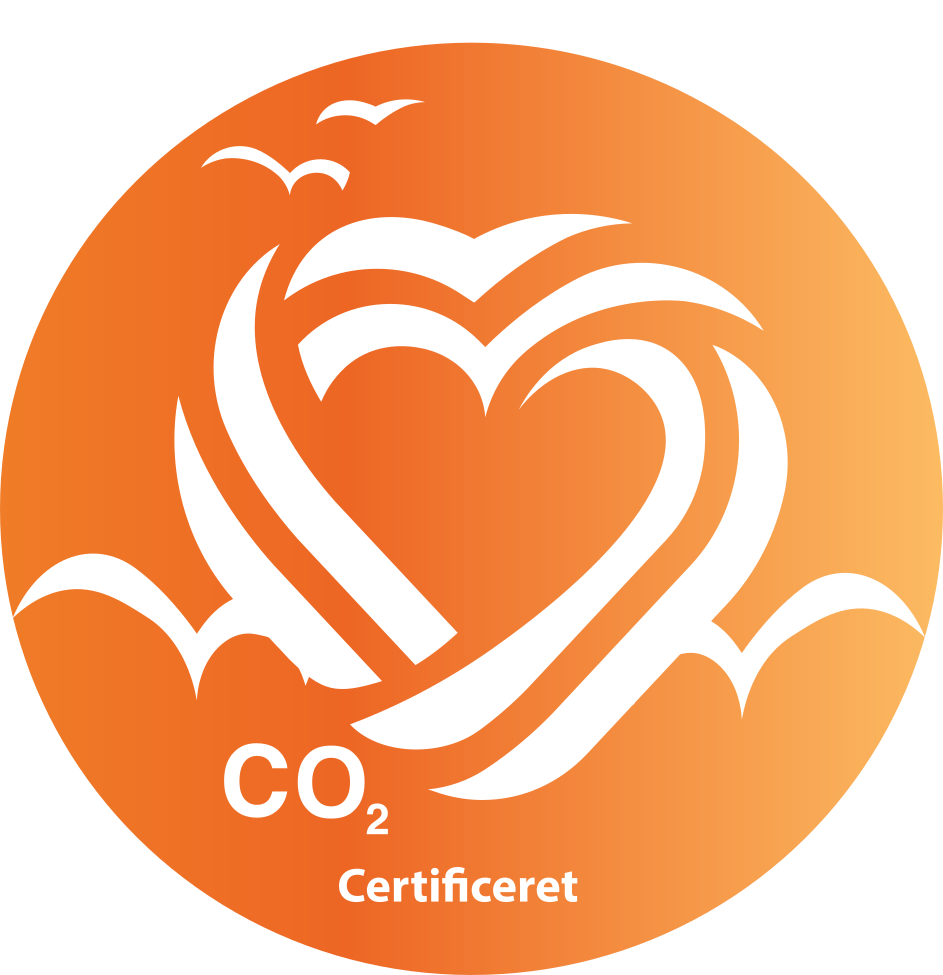
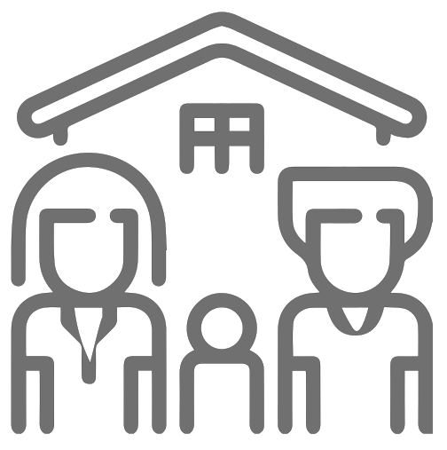
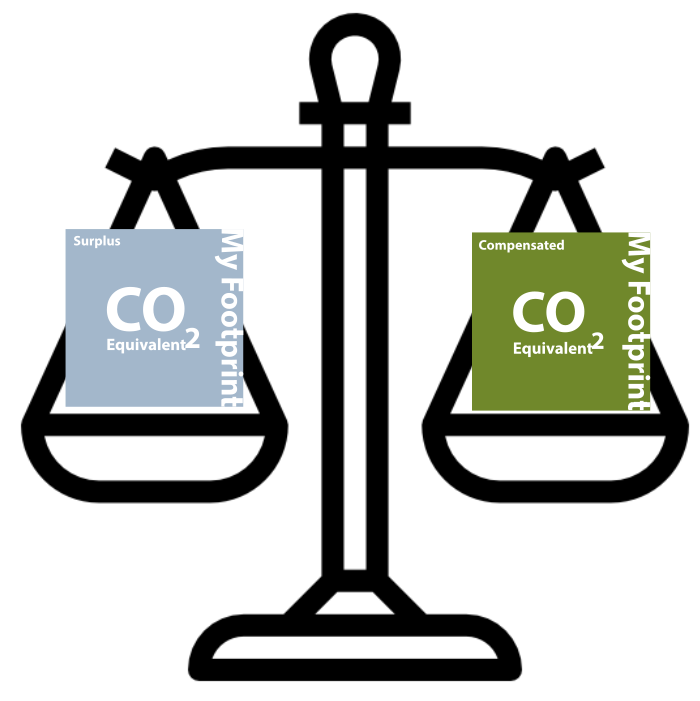
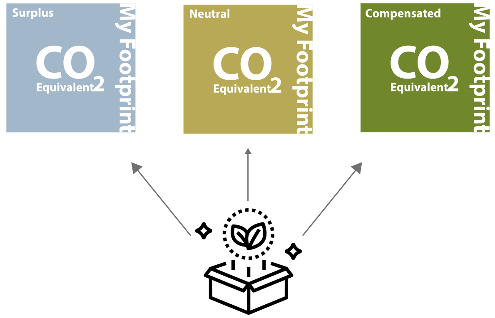
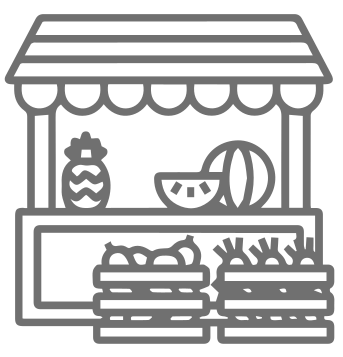
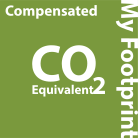
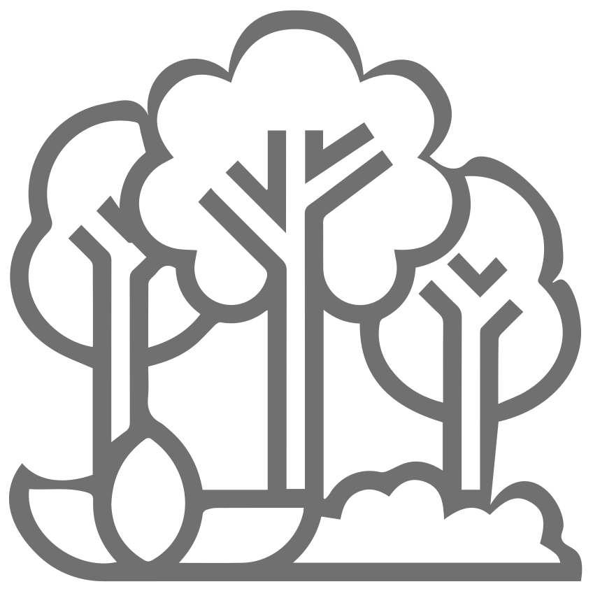
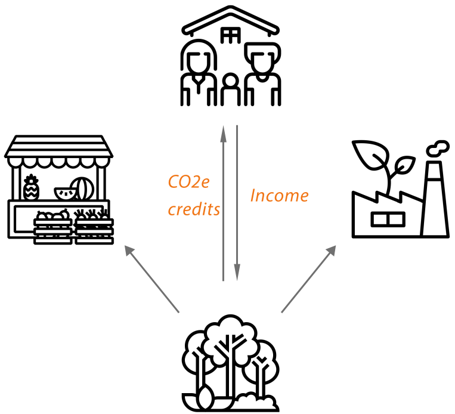
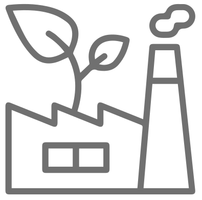

Velkommen til

Your Footprint Ltd. er en innovativ virksomhed, der stræber efter at gøre landbruget mere bæredygtigt, samtidig med at rentabiliteten bevares.
Vi har det mest nøjagtige CO2e beregningsværktøj på markedet,
i overensstemmelse med Green House Gas Protocol (GHGP) og overgår regeringens forventninger til CO2-modellering.
Ud over vores beregningsværktøj, vi har en indbygget CO2e-markedsplads for handel med CO2-kreditter. Vores mål er at gøre det rentabelt for landbrug og jordejere, at plante mere skov og begynde at dyrke kulstof som en ressource. Virksomheder kan også bruge vores værktøj til at beregne deres SCOPE3 CO2e-fodaftryk, og derefter bruge vores handelsplatform til at erhverve CO2e-kreditter fra os og blive certificeret CO2e neutral.
Ud over vores beregningsværktøj, vi har en indbygget CO2e-markedsplads for handel med CO2-kreditter. Vores mål er at gøre det rentabelt for landbrug og jordejere, at plante mere skov og begynde at dyrke kulstof som en ressource. Virksomheder kan også bruge vores værktøj til at beregne deres SCOPE3 CO2e-fodaftryk, og derefter bruge vores handelsplatform til at erhverve CO2e-kreditter fra os og blive certificeret CO2e neutral.
For mere information kontakt :- admin@yourfootprint.uk

USERS
Landbrugsvirksomhed og Grundejere
SMV'er små til mellemstore virksomheder
GÅRDVIRKSOMHEDSEJER
Denne sektion er for landbrugsvirksomheder og miljøforkæmpere, der ejer en gård
Leder du efter en måde at reducere dit CO2-fodaftryk, reducere produktionsomkostningerne og øge omsætningen.
Hvad gørgård Virksomhedsejere
komme til at bruge YourFootprint?
En oversigt over deres bedrifters CO2e-status

CO2e reduktion gennem vores CO2e kredit handelsplatform
CO2e reduktion gennem vores CO2e kredit handelsplatform
**Denne sektion kræver et månedligt abonnement
**Denne sektion kræver et månedligt abonnement
Efter at have taget YF Spørgeskema, kan du begynde at bruge fordelene ved værktøjet.
Forbrugeren/slutbrugeren
Hvad gør det offentligheden få brugt
Dit fodaftryk
Forbrugerne kan få solid information om CO2e-neutrale produkter, som de
købe fra virksomheder, der bruger YourFootprint. Plus en fuldstændig gennemsigtig rapportering om, hvem, hvordan og hvor CO2e-kreditterne indsamles og beregnes

**Dette afsnit er gratis at bruge for forbrugeren/slutbrugeren.

Virksomhedsejere
Er du en virksomhedsleder, der leder efter nye og innovative måder at håndtere din CO2 på?
Er du interesseret i din klimapåvirkning, som en mindre virksomhed. Vil du give videre
fordel ved CO2-reduktion for dine kunder? Så er denne sektion noget for dig.
Hvad gør Virksomhedsejere ubrugere får brugt
Dit fodaftryk?
- Bæredygtighedsbranding

- CO2e certificering
- CO2e reduktion via CO2e kredit handel & kompensation.
Efter at have udfyldt spørgeskemaet, vil du blive omdirigeret til resultatsiden, hvor du kan se
hele dit overblik, plus en trin for trin guide til, hvordan du kompenserer CO2e-emissionen, og hvordan du bruger
handel
platform.

- Et værktøj til at markedsføre deres CO2e-neutrale status.

- Bæredygtighedsregnskab for fremtiden.
- Oversigt over deres bedrifters CO2e-status.
- Oversigt over deres bedrifters CO2e-status.

SKOVEJER
Er du en seriøs industrilandmand, eller ejer du et betydeligt skovbrug.
Så er denne sektion noget for dig. Ved at bruge vores system kan du udforske nye muligheder og øge
værdien af store arealer
af din jord.
Hvad får en skovejer/industrilandmand-bruger ved at bruge dit fodaftryk?
- Bæredygtighedsregnskab i tråd med
international
GHG regler.
- Du kan tjene penge bare ved at bruge vores handel
platform.
Hvordan virker det ?
- Tilmeld dig vores system.
- Besvar spørgeskemaet.
- Få dit overblik og CO2e-kreditter og byt dem ind
vores system.
- Udfyld spørgeskemaet
- Få en trin for trin guide til brug af handelssystemet
START AT TJENE PENGE

**YourFootprint får en % hver gang du tjener penge på din skov/jord via YourFootprint.
Beløbet afhænger af størrelsen på din skov/jord, der er gemt i vores system.
Beløbet afhænger af størrelsen på din skov/jord, der er gemt i vores system.
**0 - 100 Hectar = %5
**100 - 200 Hectar = %4
**200 - 300 Hectar = %3
**300 - 400 Hectar = %2
**500 - + Hectar = %1
**100 - 200 Hectar = %4
**200 - 300 Hectar = %3
**300 - 400 Hectar = %2
**500 - + Hectar = %1

FORRETNING
Er du en lille / mellemstor virksomhed, og en first mover i din branche, kan vi give dig en
fuldt certificeret scope 3 livscyklusanalyse
for din virksomhed. Er du en national virksomhed under pres fra regulering og det økonomiske
sektor for at deklarere din CO2e
aktiviteter, herunder din upstream og downstream (SCOPE 3) i 2023/24.
Hvad gør virksomhedsejere
brugere kan bruge YourFootprint ?
- Bæredygtighedsbranding.
- CO2e-certificering.
- CO2e-reduktion via kredithandel.
- Et værktøj til at markedsføre deres CO2e-neutrale status.
- Bæredygtighedsregnskab for fremtiden.
- CO2e-certificering.
- CO2e-reduktion via kredithandel.
- Et værktøj til at markedsføre deres CO2e-neutrale status.
- Bæredygtighedsregnskab for fremtiden.